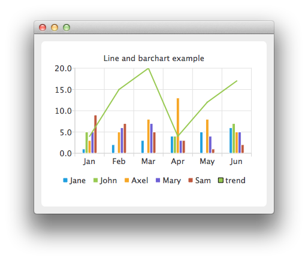

Combining Line and BarChart
Note: This is part of the Charts with Widgets Gallery example.
In the example we combine a linechart with a barchart and use the category axis as a common axis for both.

Here we create data for our bar series.
auto set0 = new QBarSet("Jane"); auto set1 = new QBarSet("John"); auto set2 = new QBarSet("Axel"); auto set3 = new QBarSet("Mary"); auto set4 = new QBarSet("Sam"); *set0 << 1 << 2 << 3 << 4 << 5 << 6; *set1 << 5 << 0 << 0 << 4 << 0 << 7; *set2 << 3 << 5 << 8 << 13 << 8 << 5; *set3 << 5 << 6 << 7 << 3 << 4 << 5; *set4 << 9 << 7 << 5 << 3 << 1 << 2;
We create a bar series and append sets to it. The first values of each set are grouped together in the first category, the second values in the second category and so on.
auto barseries = new QBarSeries; barseries->append(set0); barseries->append(set1); barseries->append(set2); barseries->append(set3); barseries->append(set4);
Then we create a line series and add data to it. To make the data match with the barchart, we use the index as an x-value for our line series, so that first point is at (0,value) second at (1,value) and so on.
auto lineseries = new QLineSeries; lineseries->setName("trend"); lineseries->append(QPoint(0, 4)); lineseries->append(QPoint(1, 15)); lineseries->append(QPoint(2, 20)); lineseries->append(QPoint(3, 4)); lineseries->append(QPoint(4, 12)); lineseries->append(QPoint(5, 17));
Here we create the chart and add both series to it.
auto chart = new QChart; chart->addSeries(barseries); chart->addSeries(lineseries); chart->setTitle("Line and Bar Chart");
To make the chart show the series properly, we have to create custom axes for the series. If we don't create custom axes, then each series will get scaled to use the maximum area of the chart (like in single series case) and the result will be incorrect. With custom axes we set the range of both series to follow the same axis. For the x-axis we use the QBarCategoryAxis and for the y-axis we use QValuesAxis.
QStringList categories; categories << "Jan" << "Feb" << "Mar" << "Apr" << "May" << "Jun"; auto axisX = new QBarCategoryAxis; axisX->append(categories); chart->addAxis(axisX, Qt::AlignBottom); lineseries->attachAxis(axisX); barseries->attachAxis(axisX); axisX->setRange(QString("Jan"), QString("Jun")); auto axisY = new QValueAxis; chart->addAxis(axisY, Qt::AlignLeft); lineseries->attachAxis(axisY); barseries->attachAxis(axisY); axisY->setRange(0, 20);
And we also want to show the legend.
chart->legend()->setVisible(true); chart->legend()->setAlignment(Qt::AlignBottom);
Finally we add the chart onto a view.
createDefaultChartView(chart);